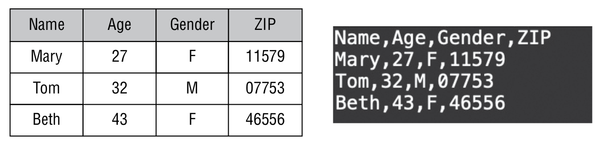
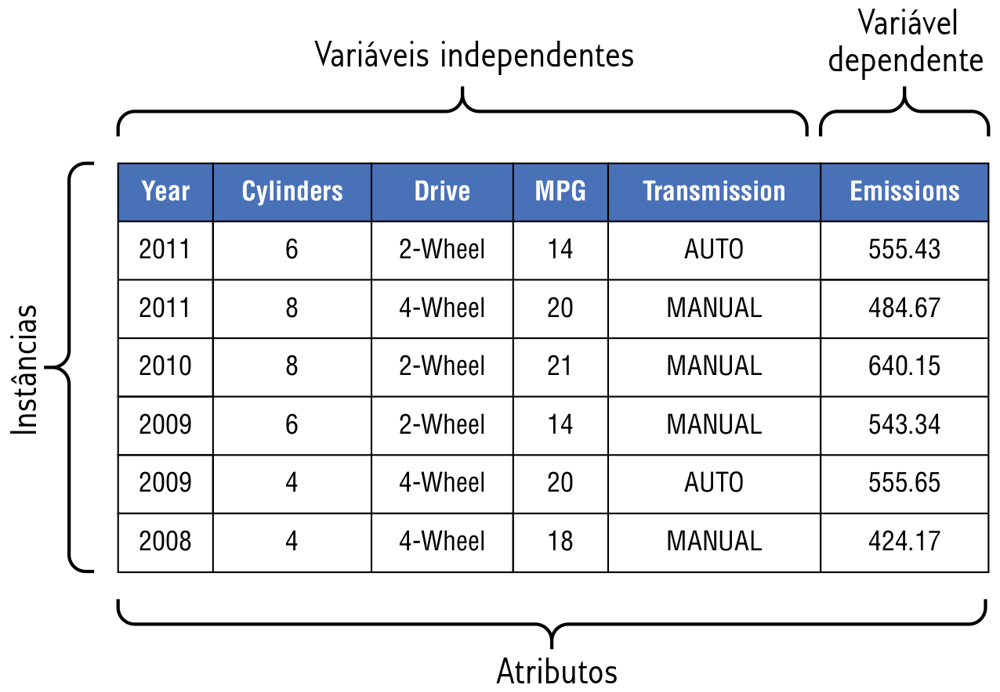
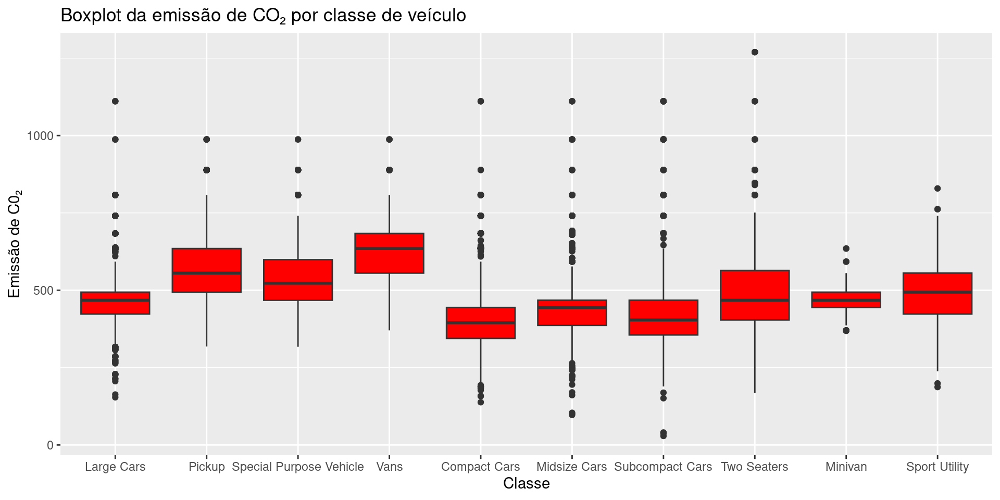
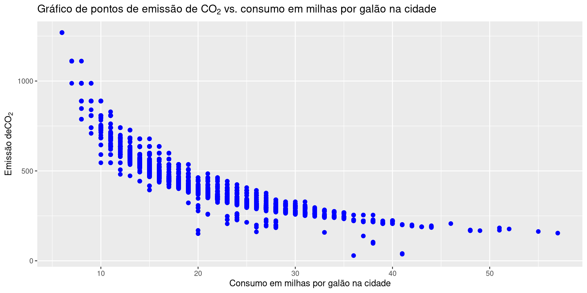
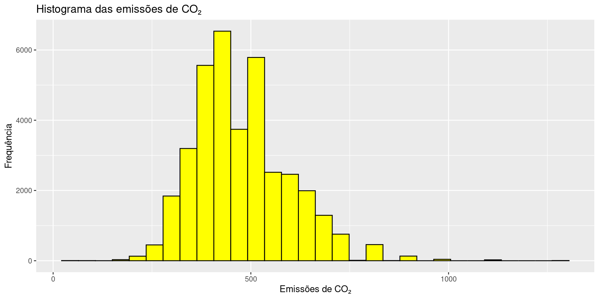
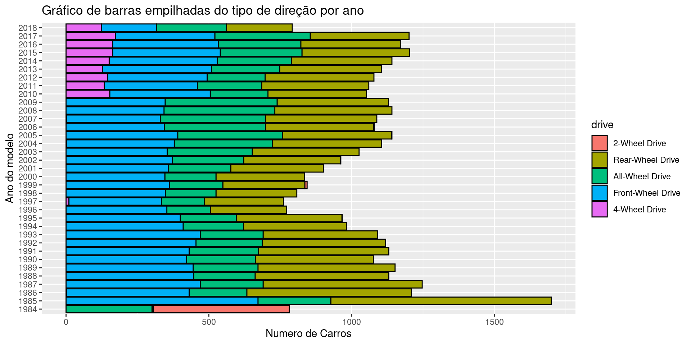
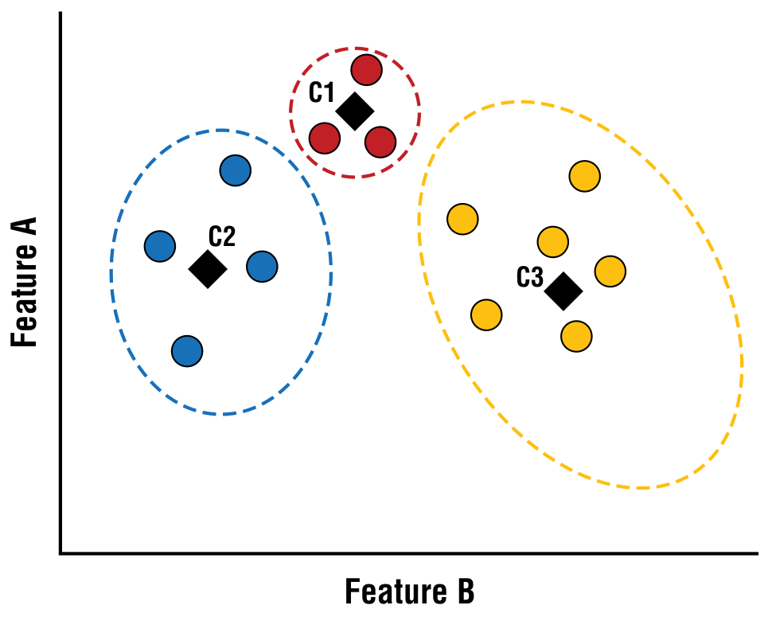

Tratando os dados
ESTAT0016 – Tópicos Especiais em Estatística (Introdução à Apredizagem de Máquina)
Tratando os dados
A qualidade de um modelo de aprendizado de máquina é tão boa quanto os dados usados para construí-lo.
Antes de construir um modelo, é crucial investir tempo coletando, explorando e preparando os dados para a abordagem de aprendizado de máquina selecionada.
Segundo Nwanganga e Chapple (2020), 80% do tempo gasto em aprendizado de máquina é, ou deve ser, dedicado ao tratamento dos dados.
Tidyverse
O tidyverse é uma coleção de pacotes R projetados para facilitar todo o processo de análise dos dados. Os principais pacotes que o compõem incluem:
- readr para importar dados no R de diversos formatos de arquivo.
- tibble para armazenar dados em um formato padronizado.
- dplyr para manipular dados.
- ggplot2 para visualizar dados.
- tidyr para transformar dados em formato “tidy”.
- purrr para programação funcional.
- stringr para manipular strings.
- lubridate para manipular datas e horas.
Coleta de Dados em Aprendizado de Máquina
Processo de adquirir dados essenciais para o aprendizado de máquina.
A quantidade e tipo de dados dependem do problema e algoritmo selecionado.
Em problemas de aprendizado de máquina supervisionado, além das variáveis que descrevem os atributos, os dados devem incluir um rótulo que representa o resultado para cada observação.
Em aprendizado de máquina não supervisionado, rótulos não são necessários para cada observação.
- Em vez disso, o foco é identificar formas interessantes de agrupar dados para atribuir rótulos significativos posteriormente.
Coleta de Dados em Aprendizado de Máquina
Quantidade de dados
A quantidade de dados necessária para treinar um modelo depende do tipo de abordagem de aprendizado de máquina escolhida.
Alguns algoritmos funcionam bem com pequenas quantidades de dados, enquanto outros requerem mais dados.
Compreender as vantagens e desvantagens de cada abordagem ajuda a determinar a quantidade adequada de dados.
Além da quantidade, a variabilidade dos dados também é importante.
Por exemplo, se a renda é usada para prever resultados de empréstimos, é vantajoso coletar dados de clientes com diferentes níveis de renda.
Isso permite ao modelo entender como a renda afeta os resultados dos empréstimos.
Coleta de Dados em Aprendizado de Máquina
Ética
Ética na coleta de dados envolve considerações como privacidade, segurança, consentimento informado e viés.
- Por exemplo, se houver viés nos dados usados para treinar um modelo, o modelo também replicará esse viés em suas previsões.
Previsões tendenciosas podem ser prejudiciais, especialmente quando afetam populações sub-representadas nos dados.
Dados tendenciosos frequentemente se originam de viés humano no processo de coleta ou da falta de dados sobre certas subpopulações.
Importando os Dados
O pacote readr costuma ser o primeiro pacote do tidyverse utilizado na maioria dos códigos R para aprendizado de máquina.
- Os dados são importados em uma estrutura chamada tibble e podem ser carregados diretamente do disco ou de uma URL.
O formato de arquivo mais comum é comma-separated value (CSV). Ele é lido com a função read_csv().

- Outros comandos também podem ser usados. Exemplo: readxl::read_xlsx() para arquivos com extensão “.xlsx”.
Explorando os Dados
Explorando os Dados
Um dos pontos cruciais em ciência de dados é passar um tempo compreendendo os dados.
A exploração dos dados nos permite responder perguntas como:
Quants linhas e colunas os dados possuem?
Quais tipos de variáveis estão presentes nos dados?
Existem valores faltando, inconsistentes ou duplicados nos dados?
Existem outliers nos dados?
Para responder a essas perguntas, precisamos descrever os dados usando resumos estatísticos e gráficos.
Explorando os Dados
Na exploração de dados, precisamos descrever os dados de forma compreensível.
No aprendizado de máquina, usamos termos para descrever a estrutura e os valores nos dados.
Instância (instance)
Uma instância é uma linha dos dados.
Ela representa uma unidade amostral que possui um conjunto de atributos.
Um conjunto de dados é composto por várias instâncias.
Elas também podem ser chamadas de registros, exemplos ou observações.
Atributos (feature)
Um atributo é uma coluna de dados que representa uma propriedade ou característica de uma instância, isto é, uma variável.
Cada instância possui vários atributos que podem ser categorizados com base no tipo de dados que eles contêm e podem ser descritos como atributos discretos ou contínuos.
Atributos também podem ser categorizados de acordo com sua função em aprendizado supervisionado.
Atributos que descrevem os dados são conhecidos como variáveis independentes.
Atributos que representam o rótulo são chamadas de variáveis dependentes.
Em problemas de classificação a variável depedente é chamada classe.
Em problemas de regressão a variaǘel dependente é chamada de resposta.

Dimensionalidade
A dimensionalidade de um conjunto de dados representa o número de atributos.
Quanto maior a dimensionalidade do conjunto de dados, mais detalhes temos sobre os dados, mas também aumenta a complexidade computacional e o consumo de recursos.
Posteriormente, discutiremos algumas abordagens para reduzir a dimensionalidade de um conjunto de dados, a fim de facilitar o trabalho com aprendizado de máquina.
Esparsidade e Densidade
A esparsidade e a densidade dos dados descrevem o grau de existência de dados para os atributos em um conjunto de dados. Exemplo:
Se 20% dos valores em um conjunto de dados estão ausentes ou indefinidos, o conjunto de dados é considerado 20% esparso.
A densidade é o complemento da esparsidade, então um conjunto de dados que é 20% esparso também é considerado 80% denso.
Resolução
Resolução descreve o nível de detalhe dos dados.
Quanto mais detalhados são os dados, maior a resolução, e quanto menos detalhados, menor a resolução. Exemplo:
Dados de vendas no varejo no nível individual de compras de clientes têm alta resolução.
Por outro lado, dados de vendas resumidos no nível estadual ou regional têm baixa resolução.
A resolução apropriada é ditada pelo problema de negócios e pela tarefa de aprendizado de máquina.
- Se a resolução dos dados for muito alta, padrões importantes podem ser obscurecidos pelo ruído, mas se a resolução for muito baixa, padrões importantes podem desaparecer.
Estatística descritiva
A estatística descritiva é útil na exploração e compreensão dos dados.
Frequência e moda são medidas úteis para descrever atributos categóricos.
Para dados contínuos, média e mediana são estatísticas mais usadas para descrever as propriedades dos dados.
No R, um resumo das estatísticas pode ser obtido com a função summary().
Se quisermos analisar atributos específicos, podemos usar as funções do pacote dplyr.
select: para escolher colunas ou variáveis.
filter: para escolher linhas ou observações.
arrange: para ordendar linhas.
mutate: para modificar variáveis.
summarize: para agregar linhas.
Exemplo
Rows: 36,979
Columns: 12
$ citympg <dbl> 14, 14, 18, 21, 14, 18, 14, 18, 18, 20, 18, 18, 19,…
$ cylinders <dbl> 6, 8, 8, 6, 8, 8, 8, 4, 4, 4, 4, 4, 4, 4, 4, 4, 4, …
$ displacement <dbl> 4.1, 5.0, 5.7, 4.3, 4.1, 5.7, 4.1, 2.4, 2.2, 2.0, 2…
$ drive <fct> 2-Wheel Drive, 2-Wheel Drive, 2-Wheel Drive, Rear-W…
$ highwaympg <dbl> 19, 20, 26, 31, 19, 26, 19, 21, 24, 21, 20, 19, 20,…
$ make <fct> "Buick", "Buick", "Buick", "Cadillac", "Cadillac", …
$ model <fct> Electra/Park Avenue, Electra/Park Avenue, Electra/P…
$ class <fct> Large Cars, Large Cars, Large Cars, Large Cars, Lar…
$ year <fct> 1984, 1984, 1984, 1984, 1984, 1984, 1984, 1984, 198…
$ transmissiontype <fct> Automatic, Automatic, Automatic, Automatic, Automat…
$ transmissionspeeds <dbl> 4, 4, 4, 4, 4, 4, 4, 3, 3, 3, 3, 3, 3, 3, 3, 3, 3, …
$ co2emissions <dbl> 555.4375, 555.4375, 484.7619, 424.1667, 555.4375, 4…Exemplo
citympg cylinders displacement drive
Min. : 6.00 Min. : 2.000 Min. :0.600 2-Wheel Drive : 491
1st Qu.:15.00 1st Qu.: 4.000 1st Qu.:2.200 Rear-Wheel Drive :13194
Median :17.00 Median : 6.000 Median :3.000 All-Wheel Drive : 8871
Mean :17.53 Mean : 5.776 Mean :3.346 Front-Wheel Drive:13074
3rd Qu.:20.00 3rd Qu.: 6.000 3rd Qu.:4.300 4-Wheel Drive : 1349
Max. :57.00 Max. :16.000 Max. :8.400
NA's :6 NA's :9
highwaympg make model
Min. : 9.00 Chevrolet: 3750 F150 Pickup 2WD : 213
1st Qu.:20.00 Ford : 3044 F150 Pickup 4WD : 192
Median :24.00 Dodge : 2461 Truck 2WD : 187
Mean :23.77 GMC : 2414 Jetta : 173
3rd Qu.:27.00 Toyota : 1840 Mustang : 172
Max. :61.00 BMW : 1774 Ranger Pickup 2WD: 164
NA's :8 (Other) :21696 (Other) :35878
class year transmissiontype
Compact Cars :7918 1985 : 1699 Automatic:24910
Pickup :5763 1987 : 1247 Manual :12069
Midsize Cars :5226 1986 : 1209
Sport Utility :5156 2015 : 1203
Subcompact Cars :4523 2017 : 1201
Special Purpose Vehicle:2378 2016 : 1172
(Other) :6015 (Other):29248
transmissionspeeds co2emissions
Min. : 1.000 Min. : 29.0
1st Qu.: 4.000 1st Qu.: 400.0
Median : 5.000 Median : 467.7
Mean : 4.954 Mean : 476.6
3rd Qu.: 6.000 3rd Qu.: 555.4
Max. :10.000 Max. :1269.6
Exemplo
class
Large Cars Pickup Special Purpose Vehicle
1880 5763 2378
Vans Compact Cars Midsize Cars
1891 7918 5226
Subcompact Cars Two Seaters Minivan
4523 1858 386
Sport Utility
5156 Exemplo
class
Large Cars Pickup Special Purpose Vehicle
0.05083967 0.15584521 0.06430677
Vans Compact Cars Midsize Cars
0.05113713 0.21412153 0.14132345
Subcompact Cars Two Seaters Minivan
0.12231266 0.05024473 0.01043836
Sport Utility
0.13943049 Exemplo
co2emissions
Min. :328.4
1st Qu.:467.7
Median :555.4
Mean :564.6
3rd Qu.:683.6
Max. :987.4 Visualizando os dados
Visualizando os dados
Mesmo após o uso de técnicas estatísticas sofisticadas, certos padrões só são compreendidos quando representados por meio de uma visualização.
Existem quatro objetivos principais que orientam o tipo de visualização de dados que usamos: comparação, relacionamento, distribuição e composição.
Comparação
- Usada para ilustrar a diferença entre dois ou mais itens em um determinado momento ou ao longo de um período de tempo.
- Um dos gráficos de comparação mais utilizados é o box plot, que nos ajuda responder se:
- Existe algum atributo significativo?
- As medidas de posição se alteram nos subgrupos?
- Há variação nos dados de acordo com os subgrupos?
- Existem outliers nos dados?
Exemplo

Relação
- Tipicamente usado em atributos contínuos para ilustrar a correlação entre duas ou mais variáveis.
- Uma das visualizações mais usadas é o gráfico de pontos. Ele é usado para responder questões como:
- Há um atributo significativo?
- Como os atributos interagem entre si?
- Existem outliers nos dados?
Exemplo
veiculos %>%
ggplot() +
geom_point(mapping = aes(x = citympg, y = co2emissions),
color = "blue", size = 2) +
labs(title = expression("Gráfico de pontos de emissão de " * CO[2] *
" vs. consumo em milhas por galão na cidade"),
x = "Consumo em milhas por galão na cidade",
y = expression("Emissão de" * CO[2]))
Distribuição
- As visualizações de distribuição mostram a distribuição estatística dos valores de um atributo.
- Uma das visualizações mais usadas é o histograma, que permite mostrar a dispersão e a assimetria de um atributo.
- Algumas perguntas que o histograma ajuda a responder são:
- De qual distribuição populacional os dados são oriundos?
- Onde os dados estão localizados?
- Quão dispersos estão os dados?
- Os dados são simétricos?
- Há outliers?
Exemplo

Composição
- Uma visualização de composição mostra a composição dos componentes dos dados.
- Gráficos de barras empilhadas e gráficos de pizza (ou setores) são duas das visualizações de composição mais comumente usadas.
- Com um gráfico de barras empilhadas, é possível mostrar como um valor total pode ser dividido em partes ou destacar a importância de cada parte em relação ao valor total. Ele ajuda a responder perguntas como:
- Como as distribuições variam dentro dos subgrupos?
- Qual é a mudança relativa na composição ao longo do tempo?
- Quanto um subgrupo contribui para o total?
Exemplo

Preparação dos dados
Preparação dos dados
- Antes do processo de modelagem, precisamos ter certeza de que os dados são adequados ao método de aprendizado de máquina que vamos utilizar.
- A preparação dos dados envolve resolver problemas como dados ausentes, dados ruidosos, dados atípicos e desbalanceamento de uma classe.
- Também envolve a redução dos dados ou a modificação da estrutura dos dados para torná-los mais fáceis de trabalhar.
Limpeza dos dados
- Dados de entrada incorretos ou de baixa qualidade resultam inevitavelmente em saídas incorretas ou de baixa qualidade.
- Se não for tomado o devido cuidado no início para lidar adequadamente com questões de qualidade de dados antes de treinar um modelo, a saída do modelo será não confiável, enganadora ou simplesmente incorreta.
Limpeza dos dados
Valores ausentes (missing values)
- Existem alguns fatores que podem gerar valores ausentes nos conjuntos de dados: mudança no método de coleta, erro humano, combinação de vários conjuntos de dados, viés humano, entre outros.
Formas de contornar o problema de valores ausentes:
- Remover todas as instâncias com valores faltantes.
- Essa abordagem pode resultar em perda valiosa de informações e padrões úteis no processo de aprendizagem de máquina.
- Deve ser usada apenas quando o impacto de remover instâncias com valores ausentes é relativamente pequeno;
- ou último recurso quando outras abordagens são inviáveis ou todas já foram esgotadas.
Limpeza dos dados
Valores ausentes (missing values)
Formas de contornar o problema de valores ausentes:
- Usar uma valor que indique informação ausente.
- Em geral usa-se N/A, “valor desconhecido” ou -1 para representar valores ausentes.
- Essa abordagem geralmente é aceitável ao lidar com características categóricas não ordenadas.
- No entanto, se usada em características contínuas, pode ser confundida com dados reais e levar a suposições incorretas sobre os dados.
Limpeza dos dados
Valores ausentes (missing values)
Formas de contornar o problema de valores ausentes:
- Usar imputação.
- Imputação consistem em preencher dados ausentes usando os valores substitutos mais prováveis.
- Algumas abordagens são:
- Imputação aleatória
- Imputação baseada em correspondência
- Imputação baseada na distribuição
- Imputação preditiva
- Imputação da média ou mediana
Limpeza dos dados
Imputação aleatória
- Essa abordagem usa um valor observado selecionado aleatoriamente como substituto para um valor ausente.
- Vantagem: abordagem simples.
- Desvantagem: ignora informações úteis ou padrões nos dados durante a seleção de valores substitutos.
Imputação baseada em correspondência
- Substitui valores ausentes por valores de instâncias semelhantes com dados completos. Ela pode ser de dois tipos:
- hot-deck: valores ausentes são substituídos por valores de instâncias semelhantes pertencentes ao mesmo conjunto de dados.
- cold-deck: valores substitutos são obtidos a partir de um conjunto de dados separado.
Limpeza dos dados
Imputação baseada na distribuição
- O valor ausente do atributo é substituído com base na distribuiçao de probabilidade dos valores observados para o atributo.
- Essa abordagem é comum em valores categóricos, usando a moda como substituto para valores ausentes.
Imputação preditiva
- Usa um modelo preditivo para prever os valores ausentes, considerando a característica ausente como variável dependente e outras características como variáveis independentes.
- Essa abordagem requer treinamento de modelo e deve ser usada apenas quando necessário, pois outras abordagens de imputação geralmente são suficientes.
Limpeza dos dados
Imputação da média ou mediana
- Para atributos contínuos, essa é a abordagem mais comum.
- A média ou a mediana dos valores observados é usada como substituta para o valor ausente.
- Exemplo:
citympg displacement highwaympg
Min. : 6.00 Min. :0.600 Min. : 9.00
1st Qu.:15.00 1st Qu.:2.200 1st Qu.:20.00
Median :17.00 Median :3.000 Median :24.00
Mean :17.53 Mean :3.346 Mean :23.77
3rd Qu.:20.00 3rd Qu.:4.300 3rd Qu.:27.00
Max. :57.00 Max. :8.400 Max. :61.00
NA's :6 NA's :9 NA's :8 Limpeza dos dados
Imputação da média ou mediana
Como as médias e medianas não são muito diferentes, vamos fazer os dois tipos de substituição.
veiculos <- veiculos %>%
mutate(citympg = ifelse(is.na(citympg),
median(citympg, na.rm = TRUE), citympg)) %>%
mutate(highwaympg = ifelse(is.na(highwaympg),
median(highwaympg, na.rm = TRUE), highwaympg)) %>%
mutate(displacement = ifelse(is.na(displacement),
mean(displacement, na.rm = TRUE), displacement))
veiculos %>% select(citympg, displacement, highwaympg) %>% summary() citympg displacement highwaympg
Min. : 6.00 Min. :0.600 Min. : 9.00
1st Qu.:15.00 1st Qu.:2.200 1st Qu.:20.00
Median :17.00 Median :3.000 Median :24.00
Mean :17.53 Mean :3.346 Mean :23.77
3rd Qu.:20.00 3rd Qu.:4.300 3rd Qu.:27.00
Max. :57.00 Max. :8.400 Max. :61.00 Limpeza dos dados
Ruído (noise)
- O ruído representa a variação aleatória nos dados e pode ser introduzido durante a coleta e o processamento dos dados.
- É importante que os algoritmos de aprendizado de máquina possam lidar com o ruído, minimizando seu impacto em vez de tentar removê-lo.
- Se o ruído for um problema para o método, podemos usar algum método de suavização, tais como:
- suavização com médias de intervalos;
- suavização com limites de intervalos;
- suavização por agrupamento;
- suavização por regressão.
Limpeza dos dados
Suavização com médias de intervalos
- Envolve a divisão dos dados em intervalos e a substituição dos valores em cada intervalo pela média desses valores.
- O número de intervalos é determinado pelo usuário, e a escolha afeta a quantidade de redução de ruído: mais intervalos reduzem o ruído menos, enquanto menos intervalos reduzem o ruído mais.
- Exemplo: dividir um conjunto de dados ordenados em três intervalos.\[ 4, 8, 9, 15, 21, 21, 24, 25, 26, 28, 29, 34 \] \[ \color{blue}{4,8, 9,15}, {21, 21, 24, 25}, \color{red}{26, 28, 29,34} \] \[ \color{blue}{9, 9, 9, 9}, 23, 23, 23, 23, \color{red}{29, 29, 29, 29} \]
Limpeza dos dados
Suavização com limites de intervalos
- Os valores são separados em intervalos e substituídos por um dos limites do intervalo (aquele que estiver mais pŕoximo).
- Exemplo: \[ 4, 8, 9, 15, 21, 21, 24, 25, 26, 28, 29, 34 \] \[ \color{blue}{4,8, 9,15}, {21, 21, 24, 25}, \color{red}{26, 28, 29,34} \] \[ \color{blue}{4, 4, 4, 15}, 21, 21, 25, 25, \color{red}{26, 26, 26, 34} \]
Limpeza dos dados
Suavização por agrupamento (clustering)
- Esta abordagem usa a suavização pelo método não supervisionado de agrupamento ou clusterização.
- As instâncias dos dados são agrupados em um número de clusters definidos pelo usuário. Então a média de cada cluster substitui cada instância de acordo com o cluster ao qual pertence.

Limpeza dos dados
Suavização por regressão
- A ideia é ajustar um modelo de regressão linear para a variável a ser suavizada e substituir seus valores pelos ajustados pelo modelo.
Limpeza dos dados
Outliers
- Outlier é um valor significativamente diferente das outras observações no onjunto de dados.
- Uma vez identiicado um outlier, devemos passar um tempo entendendo porque eles existem nos dados e se são úteis (depende do problema de aprendizado).
- Algumas vezes os outliers são dados ruins (mal registrados) e devem ser removidos. Caso contrário, devem ser mantidos.
- Modelos como regressão linear são sensíveis a outliers. Se os outliers tiverem que ser mantidos nos dados, é melhor usar uma árvore de decisão.
Limpeza dos dados
Desbalanceamanto de classe
- Em problemas de classificação, quanto mais exemplos de treinamento o algoritmo recebe, melhor é sua capacidade de atribuir rótulos aos novos dados.
- Quando uma das classes possui muito mais observações que a outra, isso desequilibra a capacidade do modelo de aprender e fazer previsões precisas.
- Isso pode levar a resultados tendenciosos, onde o modelo tem um bom desempenho para a classe majoritária, mas não consegue prever com precisão a classe minoritária.
- Outro problema é que o aprendizado com dados desbalanceados pode resultar em modelos com precisão preditiva enganosamente otimista (mais fáci classificar todo mundo em uma classe, já que poucas observações pertencem à outra).
Limpeza dos dados
Desbalanceamento de classe
Métodos para resolver o problema:
- Coletar mais dados para minimizar o desbalanceamento.
- Mudar a métrica de desempenho: utilizar medidas como precisão, recall, kappa e a curva ROC em vez de depender unicamente da acurácia (precisão).
- Tentar um algoritmo diferente: considere a utilização de algoritmos como árvores de decisão e florestas aleatórias, que lidam bem com o desbalanceamento de classes em problemas de machine learning.
- Reamostragem dos dados: subamostrar a classe majoritária (under-sampling) ou a superamostrar da classe minoritária (over-sampling), incluindo a geração de exemplos sintéticos, como feito pelo algoritmo Synthetic Minority Over-sampling Technique (SMOTE).
Transformação dos dados
Transformação dos dados
- Frequentemente é preciso modificar a estrutura ou características dos dados para atender às necessidades da aprendizagem de máquina.
- Algumas técnicas usadas são:
- Normalização;
- Discretização;
- Codificação de variáveis dummy.
Transformação dos dados
Normalização
- O objetivo da normalização ou padronização é garantir que os valores de uma variável estejam dentro de uma faixa específica.
- As abordagens mais comuns são:
- Escalonamento decimal;
- Normalização Z-score;
- Normalização Min-Max;
- Transformação logarítmica.
Transformação dos dados
Normalização
Escalonamento decimal
- Consiste em dividir os valores originais por um múltiplo de \(10\) de forma que o valor absoluto máximo do conjunto de dados seja menor ou igual a \(1\).
- Matematicamente, temos: \[ v' = \frac{v}{10^j},\] em que \(v'\) é a variável normalizada, \(v\) é a variável original e \(j\) é o menor inteiro tal que \(\max\left(|v'|\right)\leq 1\).
- Exemplo: Para usar a normalização decimal em \(\{12000, 24000,30000, 40000, 98000\}\), dividimos por \(10^5\). A variável normalizada fica \(\{0.120, 0.240, 0.300, 0.400, 0.980\}\).
Transformação dos dados
Normalização
Escalonamento decimal
Exemplo:
co2emissions Min. : 29.0 1st Qu.: 400.0 Median : 467.7 Mean : 476.6 3rd Qu.: 555.4 Max. :1269.6
- Como o maior valor é 1269.6, vamos dividir por \(10^4\)
co2emissions co2emissions_d
Min. : 29.0 Min. :0.00290
1st Qu.: 400.0 1st Qu.:0.04000
Median : 467.7 Median :0.04677
Mean : 476.6 Mean :0.04766
3rd Qu.: 555.4 3rd Qu.:0.05554
Max. :1269.6 Max. :0.12696 Transformação dos dados
Normalização
Normalização Z-score
- Conhecida como normalização z-score ou normalização de média zero.
- Esta abordagem resulta em valores com média 0 e variância 1.
- A variável normalizada \(v'\) é dada por \[ v' = \frac{v-\overline{v}}{\sigma_v}, \] em que \(v\) é a variável original, \(\overline{v}\) é a média da variável \(v\) e \(\sigma_v\) é o desvio padrão da variável \(v\).
Transformação dos dados
Normalização
Normalização Z-score
# A tibble: 1 × 2
Media desv.pad
<dbl> <dbl>
1 -2.51e-16 1Transformação dos dados
Normalização
Normalização Min-Max
- Os dados originais são transformados para um novo intervalo definido pelos limites inferior e superior especificados pelo usuário, frequentemente 0 e 1.
- Matematicamente, temos \[ v' = \frac{v-min_v}{max_v - min_v}\times (L_{sup} -L_{inf}) + L_{inf}, \] em que \(min_v\) e \(max_v\) são, respectivamente, o menor e o maior valor observado em \(v\) e \(L_{inf}\) e \(L_{sup}\) são, resepctivamente, os limites inferior e superior do intervalo definido pelo usuário.
Transformação dos dados
Normalização
Normalização Min-Max
co2emissions co2emissions_n
Min. : 29.0 Min. :0.0000
1st Qu.: 400.0 1st Qu.:0.2991
Median : 467.7 Median :0.3537
Mean : 476.6 Mean :0.3608
3rd Qu.: 555.4 3rd Qu.:0.4244
Max. :1269.6 Max. :1.0000 Transformação dos dados
Normalização
Transformação logarítmica
- As transformações anteriores são boas quando os dados são simétricos.
- A transformação logarítmica é mais adequada para distribuições assimétricas e dados com valores que variam amplamente em magnitude.
- A transformação é \[ v' = \log(v). \]
Transformação dos dados
Normalização
Transformação logarítmica
co2emissions co2emissions_log
Min. : 29.0 Min. :1.462
1st Qu.: 400.0 1st Qu.:2.602
Median : 467.7 Median :2.670
Mean : 476.6 Mean :2.665
3rd Qu.: 555.4 3rd Qu.:2.745
Max. :1269.6 Max. :3.104 Transformação dos dados
Discretização
- A discretização consiste em transformar variáveis contínuas em categóricas.
- Alguns algoritmos exigem que a variável independente seja binária ou tenha um número limitado de valores distintos.
- Esse processo pode ser feito usando a suavização com médias de intervalo ou suavização com limites de intervalo.
- Outra forma comum é a dicotomização.
- Exemplo: Os valores \(\{4,8, 9,15, 21, 21, 24, 25, 26, 28, 29,34\}\) seriam dicotomizados usado \(20\) como valore de corte, ficando \(\{0, 0, 0, 0,1,1,1,1,1,1,1,1\}\).
Transformação dos dados
Variáveis dummy
- Uma variável dummy é uma dicotomização de uma variável contínua.
- Ela é muito usada em algoritmos que exigem que os atributos independentes sejam numericos (como regressão ou k-NN) e como uma forma de representar dados ausentes.
- Suponha que temos a variável abaixo:
| Drive | Código |
|---|---|
| Front-Wheel Drive | 1 |
| Rear-Wheel Drive | 2 |
| All-Wheel Drive | 3 |
Transformação dos dados
Variáveis dummy
- Usando uma variável dummy completa, temos:
| Drive | Front-Wheel Drive | Rear-Wheel Drive |
|---|---|---|
| Front-Wheel Drive | 1 | 0 |
| Rear-Wheel Drive | 0 | 1 |
| All-Wheel Drive | 0 | 0 |
- Agora, ao invés de uma variável, temos \(2\) variáveis dummies.
- Em geral, o número de variáveis dummies criadas é \(n-1\), em que \(n\) é o número de categorias da variável original.
- Em geral, a categoria que não virou dummy é porque ela é, de alguma forma, menos importante para o estudo.
Transformação dos dados
Variáveis dummy
drive drive2
2-Wheel Drive : 491 Front-Wheel Drive:13565
Rear-Wheel Drive :13194 Rear-Wheel Drive :13194
All-Wheel Drive : 8871 All-Wheel Drive :10220
Front-Wheel Drive:13074
4-Wheel Drive : 1349 Transformação dos dados
Variáveis dummy
drive drive2 drive2_Front-Wheel Drive
1 2-Wheel Drive Front-Wheel Drive 1
2 2-Wheel Drive Front-Wheel Drive 1
3 2-Wheel Drive Front-Wheel Drive 1
4 Rear-Wheel Drive Rear-Wheel Drive 0
5 Rear-Wheel Drive Rear-Wheel Drive 0
6 Rear-Wheel Drive Rear-Wheel Drive 0
drive2_Rear-Wheel Drive drive2_All-Wheel Drive
1 0 0
2 0 0
3 0 0
4 1 0
5 1 0
6 1 0Redução dos dados
Redução dos dados
- Algumas vezes precisamos reduzir os número de observações, o número de variáveis, ou ambos para utilização de um modelo de aprendizado de máquina.
- As técnicas mais comuns são:
- Amostragem;
- Redução de dimensionalidade.
Redução dos dados
Amostragem
- Em aprendizado de máquina supervisionado, a amostragem geralmente é usada para gerar os dados de treino e teste.
- Duas abordagens são usadas:
- Amostragem aleatória simples;
- Amostragem aleatória estratificada.
Redução dos dados
Amostragem aleatória simples
- Para selecionar um conjunto de treino contendo 75% das observações, fazemos:
# A tibble: 6 × 12
citympg cylinders displacement drive highwaympg make model class year
<dbl> <dbl> <dbl> <fct> <dbl> <fct> <fct> <fct> <fct>
1 23 4 1.9 Front-Wheel… 31 Satu… SW Comp… 1998
2 14 8 4.2 All-Wheel D… 23 Audi R8 Two … 2015
3 15 8 5.3 4-Wheel Dri… 22 GMC Yuko… Spor… 2017
4 25 4 1.9 Front-Wheel… 36 Satu… SC Subc… 2000
5 17 6 2.5 Front-Wheel… 26 Ford Cont… Comp… 1998
6 17 6 3.8 Front-Wheel… 27 Chev… Mont… Mids… 2003
# ℹ 3 more variables: transmissiontype <fct>, transmissionspeeds <dbl>,
# co2emissions <dbl>Redução dos dados
Amostragem aleatória simples
- Para selecionar um conjunto de teste contendo as observações restantes (25%), fazemos:
# A tibble: 6 × 12
citympg cylinders displacement drive highwaympg make model class year
<dbl> <dbl> <dbl> <fct> <dbl> <fct> <fct> <fct> <fct>
1 14 8 4.1 Rear-Wheel … 19 Cadi… Brou… Larg… 1984
2 18 8 5.7 Rear-Wheel … 26 Cadi… Brou… Larg… 1984
3 19 4 2.6 2-Wheel Dri… 20 Mits… Truc… Pick… 1984
4 18 4 2 2-Wheel Dri… 20 Mazda B200… Pick… 1984
5 23 4 2.2 2-Wheel Dri… 24 Isuzu Pick… Pick… 1984
6 18 4 2 2-Wheel Dri… 24 GMC S15 … Pick… 1984
# ℹ 3 more variables: transmissiontype <fct>, transmissionspeeds <dbl>,
# co2emissions <dbl>Redução dos dados
Amostragem aleatória estratificada
- Nesta abordagem dividimos as instâncias em grupos homogêneos (estratos) e realizamos amostragens aleatórias dentro de cada estrato.
- Isto é feito para mantermos na amostra as proporções populacionais de cada estrato.
- Podemos fazer isso no R com a função sample.split do pacote caTools.
Redução dos dados
Amostragem aleatória estratificada
- Vamos obter uma amostra aleatória estratificada contendo 1% dos dados.
drive
2-Wheel Drive Rear-Wheel Drive All-Wheel Drive Front-Wheel Drive
0.01327781 0.35679710 0.23989291 0.35355202
4-Wheel Drive
0.03648016 drive
2-Wheel Drive Rear-Wheel Drive All-Wheel Drive Front-Wheel Drive
0.01351351 0.35675676 0.24054054 0.35405405
4-Wheel Drive
0.03513514 Redução dos dados
Redução de dimensionalidade
- É a redução do número de variáveis de um conjunto de dados ante de treinar um modelo.
- Isso reduz o problema chamado de Maldição da dimensionalidade.
Maldição da dimensionalidade
É a redução de desempenho de um modelo de aprendizado de máquina à medida que o número de variáveis aumenta sem um aumento proporcional no número de exemplos.
- Seleção de atributos: encontrar as variáveis essenciais para um modelo, descartando as redundantes ou irrelevantes.
- Estração de atributos: reduz a dimensão dos dados usando análise de componentes principais (PCA) e a fatoração de matrizes não-negativas (NMF).
Fim